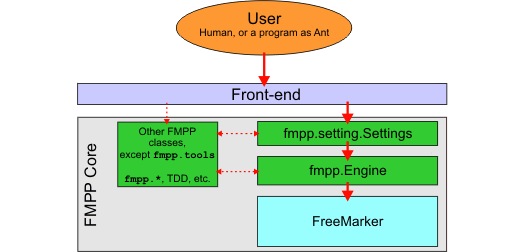

Writing New Front-ends |
| |
Note: I'm talking about writing front-ends here, but of course the same technique can be used to embed FMPP into your application that you couldn't call a front-end.
The low-level method is to create an fmpp.Engine object, and then set it up with its methods, and then call its process(...) method to execute a processing session. The API of this object reflects the internal architecture of FMPP. Higher-level concepts as settings or configuration files doesn't exist on this level. So I don't recommend you to work with fmpp.Engine objects directly.
The high-level method is to create an fmpp.setting.Settings object, and fill it with the setting values. This object can load configuration files, and its API uses a higher level approach in general. This is the object where FMPP settings are implemented. After you set the setting values (and also you have added progress listeners and engine attributes you wanted), invoke Settings.execute() to execute a processing session.

Figure: The components involved in typical FMPP usage. Red arrow shows direct method invocation (or constructor invocation, or static field access) between the components. The arrow points from the caller towards the called. Dashed lines indicate unimportant or occasional access.
Note that some settings are not implemented by Settings (as echoFormat, logFile, ...etc.), and should be implemented by the front-end.
For more information, please see the API documentation. Also, you can look into the source code of fmpp.tools.CommandLine and fmpp.tools.AntTask.
Example: Below is the source code of a very simple command-line front-end. It accepts one argument, the name of the configuration file to use. If that's omitted, it tries to load a configuration file from the current directory.
| |||
|
||